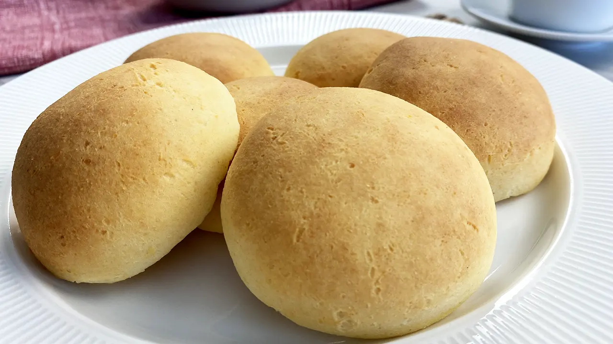

Elaboración paso a paso
Paso 1 / 7
Masa de almojábana.
Paso 2 / 7
Precalentamos el horno a 230°C ó 450°F.
Paso 3 / 7
En un bol grande mezclamos los ingredientes secos: la harina de maíz, el azúcar, la sal y el polvo de
hornear.
Paso 4 / 7
Agregamos el queso rallado y mezclamos muy bien.
Paso 5 / 7
Incorporamos el huevo batido y empezamos a amasar para integrar muy bien los ingredientes.
Paso 6 / 7
Finalmente vamos añadiendo la leche poco a poco hasta que la masa vaya poniéndose suave y moldeable.
Paso 7 / 7
Hacemos 10 bolitas y lueo las aplanamos un poco para darle forma de torticas o panesillos.
Horneado de las almojábanas
1.En una bandeja apta para horno, previamente engrasada y enharinada o con papel de horno, ponemos nuestras
almojábanas, con una separación de 5 cm. entre cada una.
2.Introducimos la bandeja en nuestro horno y dejamos cocinar entre 15 y 20 minutos.
Recetas de las almojabanas
Almojabana

Ingredientes
1 taza y media de harina de maíz precocida amarilla (150 grs.)
2 cdas. azúcar blanca
1 cdta. polvo para hornear
1/4 cdta sal fina
4 tazas queso cuajada (400 grs.)
1 huevo grande batido temperatura ambiente
5 cda. leche líquida